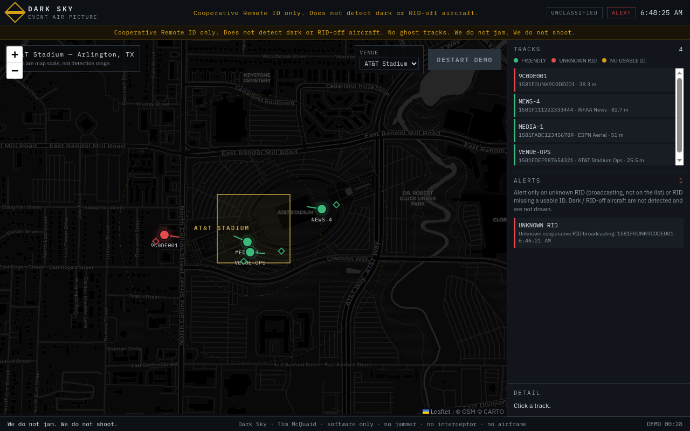
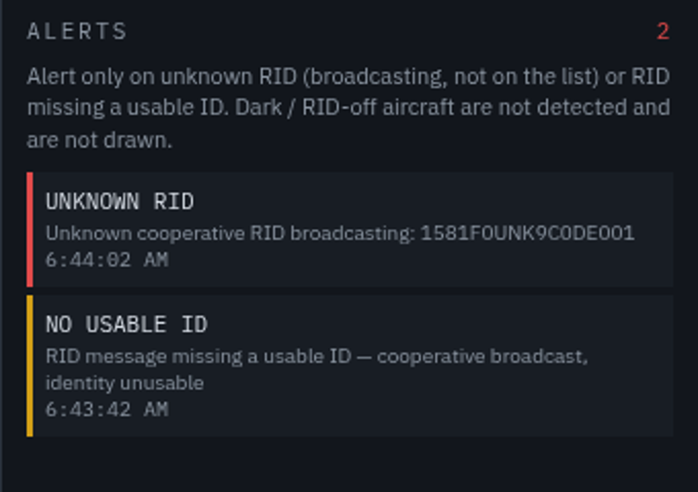
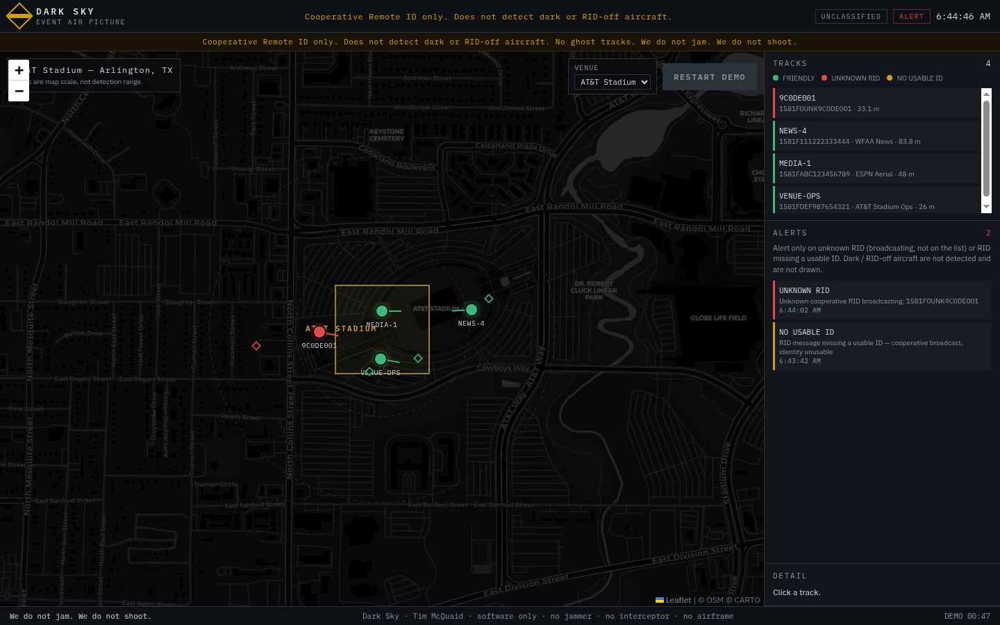

01
Event Air Picture 0.1.1
Software. Cooperative Remote ID map. Buyer brings receivers. Python web map, friendly list, unknown-RID alert. If they are not broadcasting, they are not on the map. Per-event or season-month. Not a 12-month SaaS.
Dark Sky Systems
Dark Sky · forming
A live map of cooperative Remote ID over a venue. Who is up. Whether they are on the friendly list. An alert only when a broadcasting track is unknown or has no usable ID.
If they are not broadcasting, they are not on the map. We do not jam. We do not shoot.
Software. Buyer brings the receivers.
Cooperative Remote ID only. We do not jam. We do not shoot.
Copied.
Event Air Picture is a live map of cooperative Remote ID over a venue: who is up, whether they are on the friendly list, and an alert only when a broadcasting track is unknown or has no usable ID. If they are not broadcasting, they are not on the map. We do not jam. We do not shoot.
Software. Buyer brings the receivers.
A live map of cooperative drones over a venue. ASTM F3411 / OpenDroneID only.
A Python web map you run at the venue. Cooperative Remote ID only. Who is up, whether they are on the friendly list, and an alert only when a broadcasting track is unknown or has no usable ID. If they are not broadcasting, they are not on the map. No ghost tracks.
Not a detector of dark or RID-off aircraft. Not a radio. Not an effector. Not a claim of radar, RF direction-finding, acoustic, or optical detect-and-track. Range rings on the map are map scale, not a detection range. Not certified Remote ID. Not FAA / DoD / SAFETY Act / FEMA-approved.
server.py plus the static UI. Python 3 standard library. No pip.uas_id, callsign, operator, note). Buyer edits it for the venue.Per-event (one venue, one sit, up to 72 hours) or one season month. Not a 12-month SaaS.
They bring a laptop, a phone or ESP32 that can POST OpenDroneID-shaped JSON, and their own friendly CSV. We do not invent a track if the radio heard nothing.
First sit is on their machine. Do not sell a season if they cannot read friendly vs unknown vs no-usable-ID. Live air is a real POST, not demo chrome sold as the sit.
For operations and security leads at a stadium, a campus, or an NSSE who need to see the cooperative picture before anyone talks about effects. If the first question is a stamp, a jam, or a guaranteed effect, this is the wrong product.
College football. NFL. NSSE. One named venue. One named window.
Event Air Picture 0.1.1 sits a software picture. DS-PART sits on that same picture — mounts, enclosures, brackets. Software only unless they asked for a part. You bring the receivers.
Not a live World Cup sit. World Cup 2026 is over. Not coverage. Not a public eval sit.
College football. NFL. NSSE. Software only. You bring the receivers.





Event Air Picture 0.1.1 is the platform. Request Event Air Picture. Parts attach.
01
Software. Cooperative Remote ID map. Buyer brings receivers. Python web map, friendly list, unknown-RID alert. If they are not broadcasting, they are not on the map. Per-event or season-month. Not a 12-month SaaS.
02
DS-PART-MOUNT. DS-PART-ENCL. DS-PART-MAST. DS-PART-CUSTOM. Field hardware for Event Air Picture 0.1.1. Printed fixture. Printed here. Quote a part. We do not hold stock.
Request a part — attach only.
DS-PART-MOUNT
clamp for a RID receiver on a rail or tripod. Printed fixture. Not a radio.
DS-PART-ENCL
enclosure already on an Event Air Picture sit. Printed fixture. Not a detector.
DS-PART-MAST
bracket for a receive antenna on a temporary event pole. Not a transmit or jam antenna.
DS-PART-CUSTOM
one-off in the same family, same sit. Not a second catalog.
A listen-only instrument can sit next to the picture. TX locked. Not a headline.
Field hardware for Event Air Picture 0.1.1. Printed fixture. Printed here. Quote a part.
DS-PART-MOUNT. DS-PART-ENCL. DS-PART-MAST. DS-PART-CUSTOM. High-end materials. Tight tolerance. Printed fixture. Printed here. Quote a part. We do not hold stock.
Not a print-shop brand, a trinket line, a coverage offer, an eval card, jam or TX parts, an airframe, a second brand.
Listen / picture family only. We do not jam. We do not shoot. This is a mount, a box, or a bracket — not a radio, not a range, not an airframe.
A quote against a named receiver, phone, loaner, or pole already on a picture or eval sit. No part ships as a standalone detect product. A part is requested, not invoiced.
Field hardware for Event Air Picture 0.1.1. Printed here. Quote a part.
A part is requested, not invoiced. Request a part.
Copied.
DS-PART. Field hardware for Event Air Picture 0.1.1. Printed fixture. Printed here. Quote a part.
DS-PART-MOUNT. DS-PART-ENCL. DS-PART-MAST. DS-PART-CUSTOM. High-end materials. Tight tolerance. Printed fixture. Printed here. Quote a part. We do not hold stock.
Request a part.
If a sentence is not on this plate, do not say it.